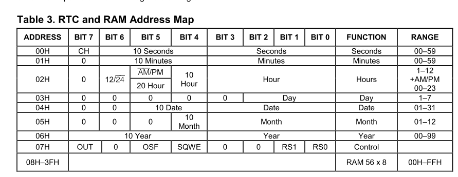

I2C的读写#
从原理图中可以看出，PS端的I2C接了三个外设，分别是EEPROM，实时时钟RTC，温度传感器，本章介绍如何利用I2C读写外设。
硬件工程搭建#
硬件工程基于”ps_hello”，另存为一份工程“i2c_test”。配置I2C0到MIO50-51，重新Generate Output Products，并导出硬件平台。
Vitis程序开发#
RTC测试#
以下是RTC DS1338的寄存器地址及说明，主要是控制类寄存器07H和时分秒寄存器00H~06H。
在DS1338手册中可以看到I2C读写时序，其中器件地址为0x68 + r/w，而xilinx提供的API函数也是7bit地址+1bit读写位.

在Vitis软件中新建工程rtc_test，其中添加了PS_i2c.c，主要提供的是i2c的初始化和读写操作等函数。
在main函数中，首先是进行i2c的初始化
接下来设置为Squart-Wave模式，并设置为32.768KHz，因为板子上的晶振是32.678KHz
判断RTC是否是停止状态，如果是停止状态，设置秒寄存器的bit7设置为0。
设置初始值时分秒寄存器初始值
最后是打印时钟信息
下载验证
串口工具查看打印信息
温度传感器测试#
温度传感器用的是LM75，以下是它的寄存器说明，只要读取Temperature寄存器的值就可以了，因此它的地址为0x48+r/w
而它的数据是有两个字节，第一个字节为整数位，第二个字节为小数位，最高位为1，即0.5摄氏度，如果为0，小数位则为0
新建Vitis工程，在temp.c中设置了读取的数据为2字节
程序很简单，根据收到的数据值，每秒打印出来显示。
下载程序
串口打印信息
EEPROM读写#
新建一个Vitis工程，导出emample工程
导入xiicps_eeprom_polled_example工程
EEPROM 的程序比较简单，具体代码大家可以自己去看，这里不详细说了。下面只对程序的功能和一些要点做一下介绍：
EEPROM 的设备地址在程序的前面做了定义，这个地址就是系统访问外部 IIC 外设的设备地址，这里EEPROM地址为 0x54, 相当于 8bit 的 0xA8。
EEPROM 的设备地址可以在 24LC04 的芯片手册上找的到，高 4 位是 A，后面 3 位是 Block地址，因为 24LC04 只有 2 个 Block, 所以高 2 位 Block Address 是无效的。
由于EEPROM的地址为1个字节，在程序中修改如下
程序流程如下：
ReadBuffer清0，WriteBuffer赋FF写16个字节到EEPROM读EEPROM的16个字节到ReadBuffer检验是否正确Readbuffer清0，WriteBuffer赋值10~25写16字节到EEPROM读16字节到ReadBuffer检验是否正确返回
下载程序
串口结果
本章小结#
本章介绍了PS端的I2C控制外设的实验，用户可以再做下。